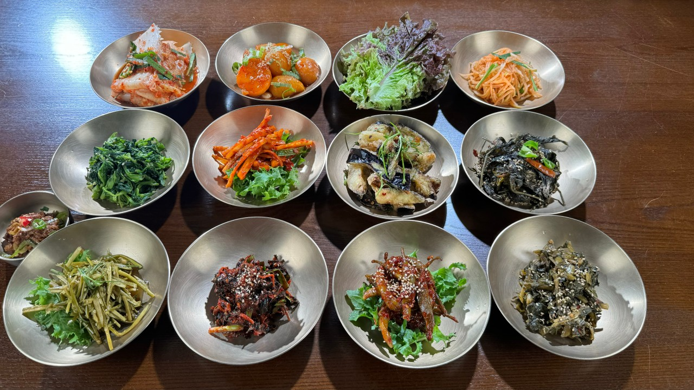
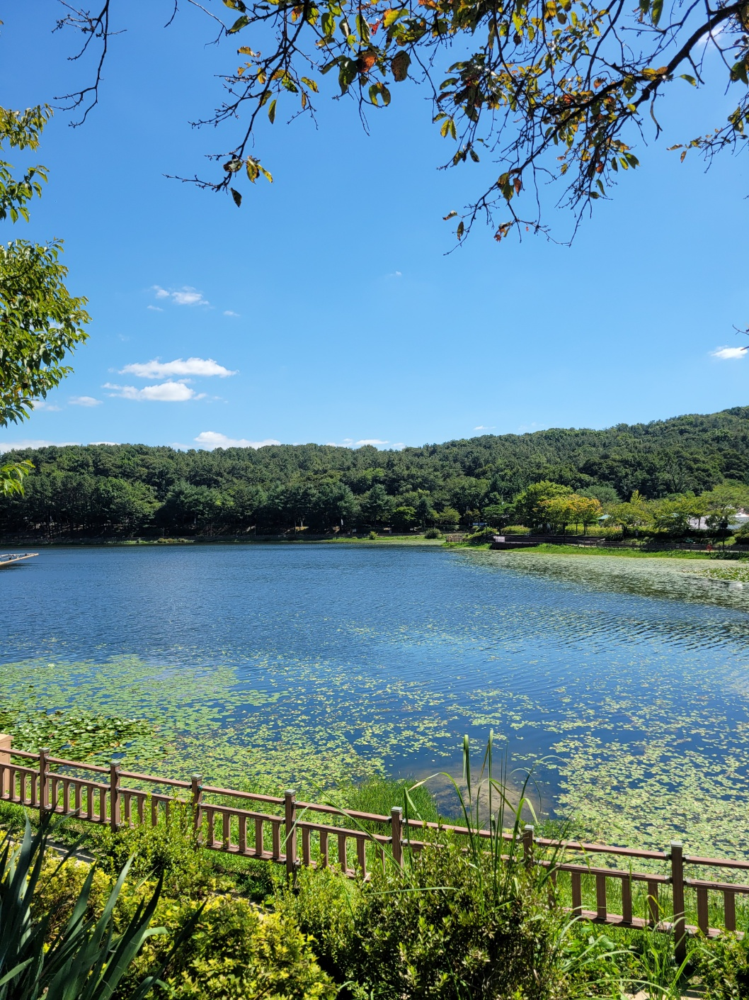
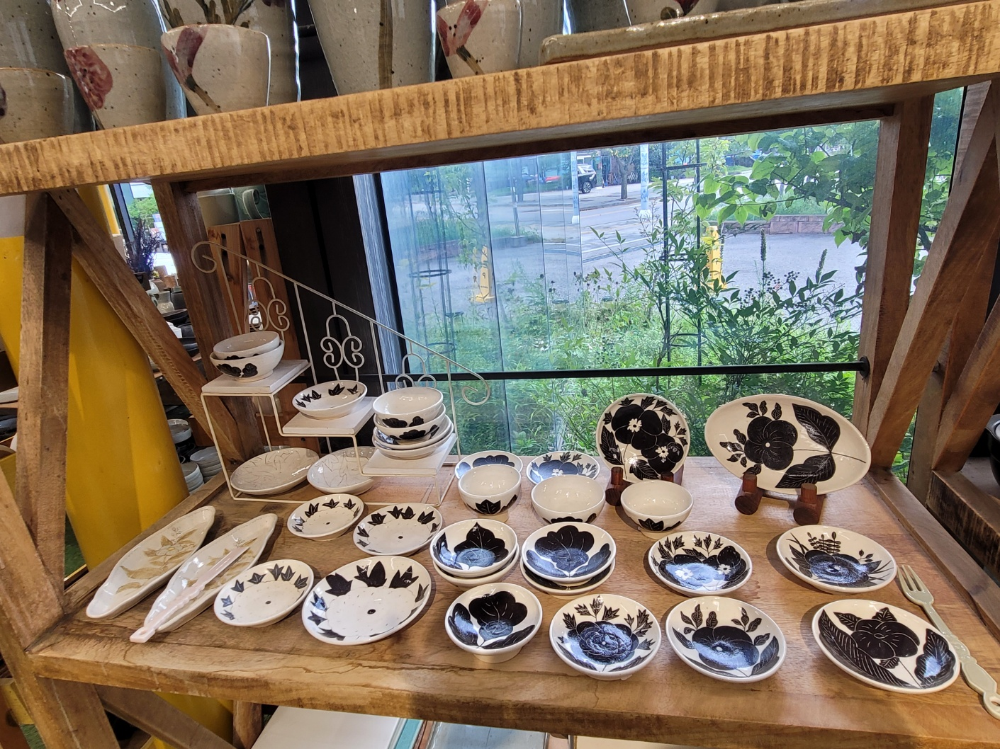

취향과 이동 부담을 비교하고,
그대로 따라가는 이천 하루 코스
차 없이 떠나는 주말, 20대 뚜벅이를 위한 완성형 당일치기 코스 가이드. 복잡한 환승 스트레스와 불확실한 배차 간격 없이, 정갈한 쌀밥과 맑은 호수, 공방 골목을 잇는 단단한 동선을 제안합니다.

정갈한 이천 쌀밥 & 빵·차·도자기
강민주의 들밥 × 이진상회푸짐한 들밥 한 상으로 든든히 채우고, 바로 옆 이진상회에서 갓 구운 빵과 차, 감각적인 도자기까지 한 번에 즐겨보세요.

고요한 설봉호수 & 조각공원, 미술관
설봉공원 문화 산책호수 둘레길의 잔잔한 풍경을 따라 설봉국제조각공원의 야외 작품과 이천시립박물관·월전미술관까지 천천히 이어갑니다.

손길 깃든 공방, 골목마다 아름다운 예스파크
이천 도자예술마을도자기와 조형물이 어우러진 마을길을 걷고, 솔과흙·토토공방·토담·라기환 공방에서 작가의 손길이 담긴 나만의 생활 도자를 발견해보세요.
뚜벅이의 소중한 주말을 지키는 세 가지 원칙
포털 사이트의 뻔한 광고나 차 없인 가기 힘든 비효율 동선을 덜어내고, 실제 현장에서 걸어보고 정제했습니다.
불필요한 검색 없이
3개 코스 중 택1
수백 개의 블로그 리뷰를 헤매지 마세요. 취향과 체력 난이도에 맞춘 3가지 코스(힐링 산책, 핵심 문화, 공예 집중) 중 하나만 골라 바로 출발할 수 있습니다.
전철역 기준 실제 이동 시간과
택시비 정밀 안내
이천역과 신둔도예촌역 기준, 실제 도보 분수와 로컬 시내버스(24-2, 21-3번 등) 배차 꿀팁, 그리고 2인 이상일 때 더 유리한 택시 예상 비용까지 명쾌하게 산출했습니다.
직접 검증한 맛집과
공방&카페 동선
현지 로컬 쌀밥 명가부터 조용한 핸드드립 카페, 감각적인 도자 쇼룸까지 군더더기 없는 이동 선형으로 묶어 길 위에서 낭비되는 시간을 최소화합니다.
이번 주말, 내 발걸음에 꼭 맞는
이천 하루 코스를 확인해보세요.
부담 없는 반나절 산책부터 알찬 하루 풀코스까지. 각 코스의 총 소요시간, 교통비 예산, 도보 거리를 한눈에 비교할 수 있습니다.
신도림 → 신둔도예촌역(경강선) → 강민주의 들밥 직영점 → 이진상회(도자기·차) → 신둔도예촌역(경강선)
이천역 → 설봉공원·이천시립박물관·이천시립월전미술관·설봉국제조각공원·경기도자미술관&토락교실 → 초원산방 → 카페 을를 → 이천역
신둔도예촌역(경강선) → 예스파크 대표공방 → 예스파크 내 메밀국수·식당·추천 카페 → 신둔도예촌역(경강선)
원한다면 운치 있는 도예촌에서 하루 쉬어가는 1박 코스로 확장해보세요.
뚜벅이 출발 체크포인트
판교역에서 경강선 승차 시 이천역과 신둔도예촌역 두 곳 중 코스 시작점에 맞춰 하차하세요. 모든 코스 상세 페이지에서 실시간 버스 연계 시간표와 택시 승강장 위치를 바로 안내해 드립니다.